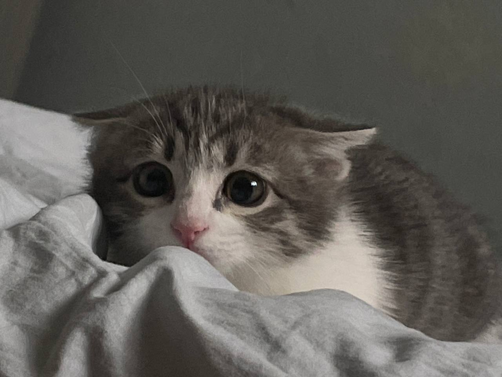
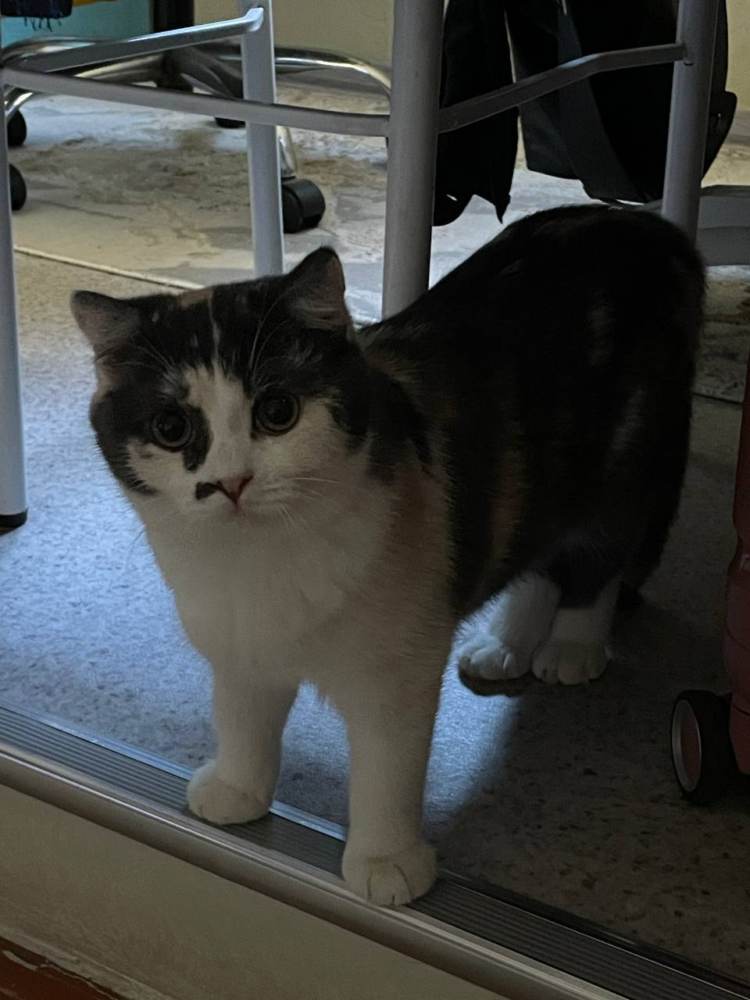

ДВА КОТА. ЦЕЛЫЙ МИР.
Жизнь на
мягких лапах.
Знакомьтесь, Юки и Лайна.
Здесь каждый день — маленькое приключение,
а каждый кадр — большая любовь.


20 кадров настоящей котожизниБез фильтров. С характером.
♡100%
мурнаши главные герои
мурнаши главные герои
В ОБЪЕКТИВЕ — САМОЕ ЛЮБИМОЕ
Наш пушистый альбом
Сонные, смешные и всегда любимые. Нажмите на кадр, чтобы рассмотреть.
20мгновений
счастья
счастья
УРОВЕНЬ МИЛОТЫ ПРЕВЫШЕН
Горячие моменты
Те самые кадры, которые заслуживают отдельной истории.
слишком мило
Счастье не нужно искать далеко.
Иногда оно просто спит рядом.